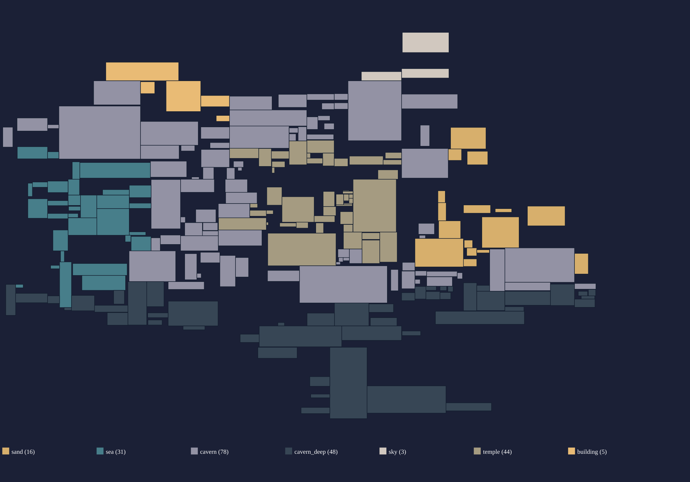
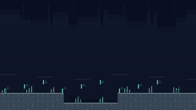
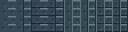
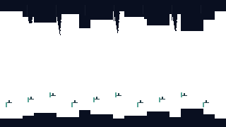
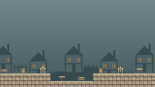
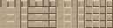
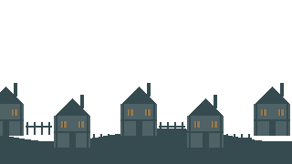
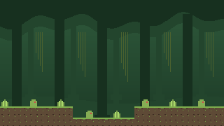
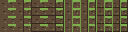
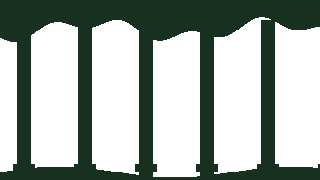

Environment themes
HK room themes

Eight original pixel-art packs at Summit’s 8×8 terrain scale. Each has 16 edge combinations in four material variants, eight decorative props, and two scenery layers. Seven are assigned to geographic regions of the HK map; forest is for the story world's jungle. The building theme now uses rural cottages, timber and plaster.
cavern deep
Dark bedrock, deeper silhouettes and luminous mineral accents.


Terrain: 16 exposed-edge masks × 4 variants · 8×8 tilesDecorations: eight transparent 16×16 cellsSeparate background layers
Distant background · Transparent nearer layer

building
Rural timber and plaster, pitched-roof cottages, fences, barrels and wheat.


Terrain: 16 exposed-edge masks × 4 variants · 8×8 tilesDecorations: eight transparent 16×16 cellsSeparate background layers
Distant background · Transparent nearer layer

forest
Earth and grass, big trunks under a canopy, hanging vines, ferns and berry bushes.


Terrain: 16 exposed-edge masks × 4 variants · 8×8 tilesDecorations: eight transparent 16×16 cellsSeparate background layers
Distant background · Transparent nearer layer
